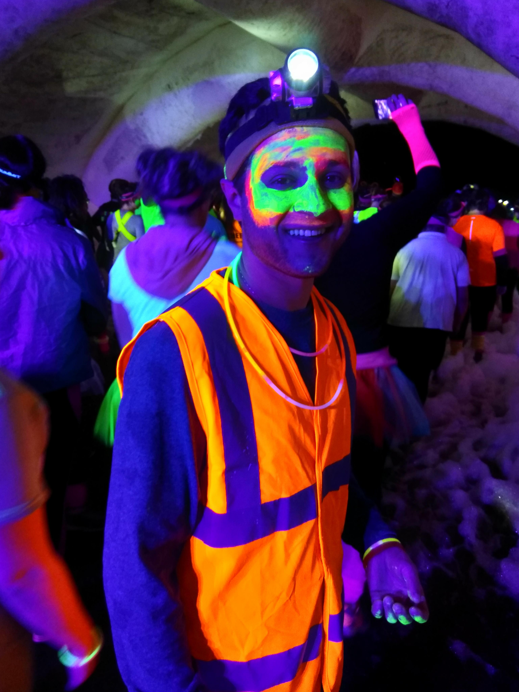

About Me
Hello Everyone! If we have not already met, my name is Sam Marcus and this is my basic portfolio page/homework assignment. I graduated from George Mason University in 2017 with a BA in Organizational Development and I currently take a part time Full Stack Web Development class at George Washington University.
In my free time I love to ride my bike on the W & OD Trail. I am currently pursuing my Private Pilots License ("PPL"), accomplishing a life long goal to fly. Addionally, I enjoy playing piano, using my telescope, and playing video games!
I hope this gives some insight about me! Feel free to ask me any questions or to chat it up about Web Stuff!